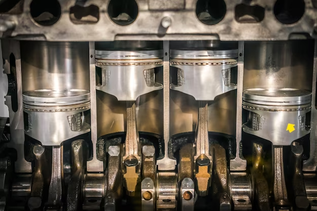
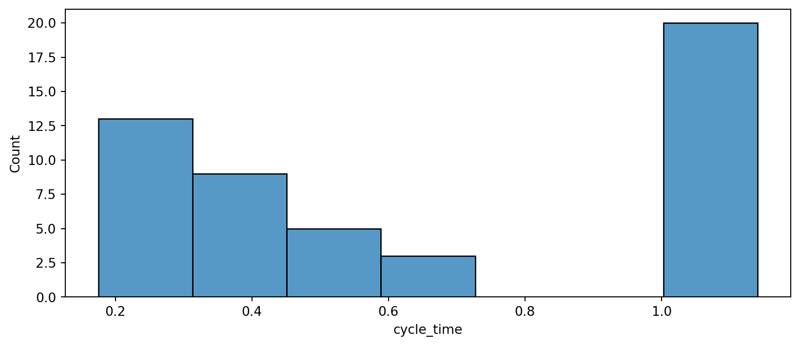
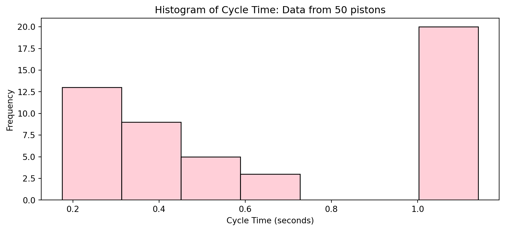
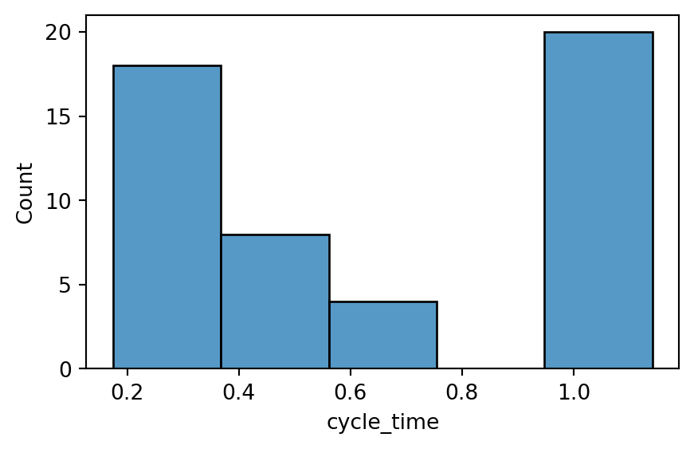
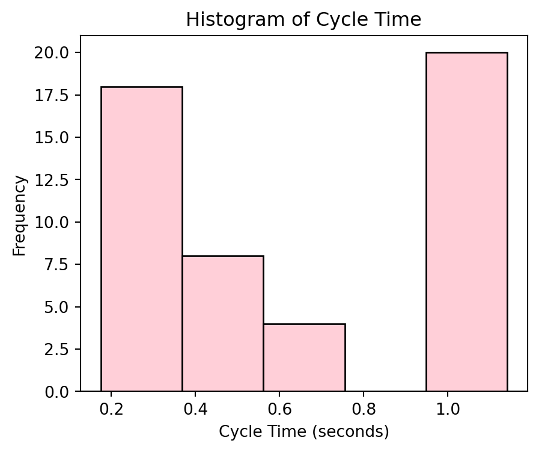
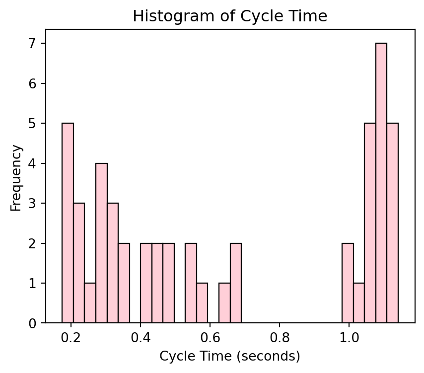
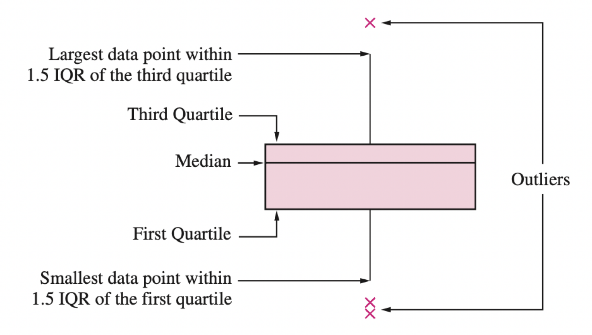
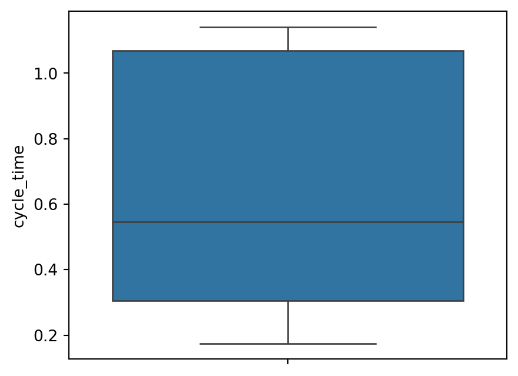
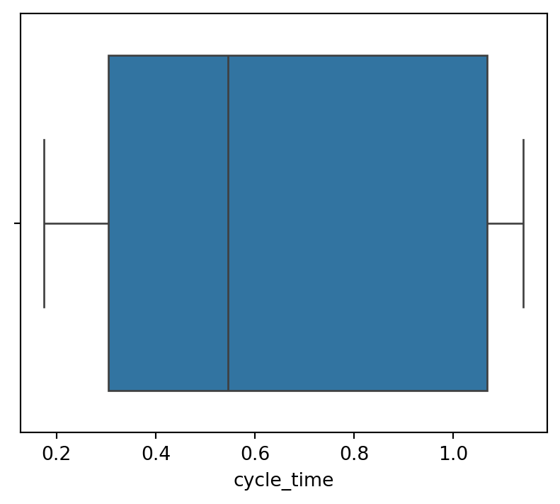

import pandas as pd
import matplotlib.pyplot as plt
import seaborn as snsNumerical Variables
IN2039: Data Visualization for Decision Making
Agenda
- Introduction to the example
- Summary statistics
- Graphs for numerical variables
Example
A piston is a mechanical device found in most engines.

One measure of a piston’s performance is the time it takes to complete a cycle, which we call “cycle time” and is measured in seconds.
The file “CYLT.xlsx” contains 50 cycle times of a piston operating under fixed conditions.
Remember to import the required libraries
We will use the libraries pandas, matplotlib, and seaborn.
Let’s load them in Google Colab before we start.
Load the data
In Google Colab, the file “CYLT.xlsx” should be placed in a folder called “Files”.
piston_data = pd.read_excel("CYCLT.xlsx")
piston_data.head()| cycle_time | |
|---|---|
| 0 | 1.008 |
| 1 | 1.098 |
| 2 | 1.120 |
| 3 | 0.423 |
| 4 | 1.021 |
Variable type
In Python, numerical data is stored as float64.
piston_data.info()<class 'pandas.core.frame.DataFrame'>
RangeIndex: 50 entries, 0 to 49
Data columns (total 1 columns):
# Column Non-Null Count Dtype
--- ------ -------------- -----
0 cycle_time 50 non-null float64
dtypes: float64(1)
memory usage: 528.0 bytesWe can see that Python recognizes our data correctly.
Summary statistics
Summary statistic
Helps us to summarize a list of observations in a simple way.
For numerical data, the most popular summary statistics are:
- Mean
- Variance and standard deviation
- Quartiles
- Maximum and minimum
Mean
Indicates the center of the data.
Let \(y_1, y_2, \ldots, y_n\) be an observed sample of size \(n\).
The mean is
\[\bar{y} = \frac{1}{n}\sum_{i=1}^{n} y_i = \frac{y_1 + y_2 + \cdots + y_n}{n}.\]
In Python, we can calculate the mean using chaining. To this end, we use the function .agg() with “mean”.
piston_data_mean = (piston_data
.agg("mean")
)
piston_data_meancycle_time 0.65246
dtype: float64You can also round the result to, say, two decimals using the function round().
piston_data_mean = (piston_data
.agg("mean")
)
round(piston_data_mean, 2)cycle_time 0.65
dtype: float64Interpretation: On average, the piston takes 0.652 seconds to complete a cycle.
Variance
Indicates how spread out the data are around the mean.
Let \(y_1, y_2, \ldots, y_n\) be an observed sample of size \(n\). The variance is
\[ s^2 = \frac{1}{n-1} \sum_{i=1}^{n} (y_i - \bar{y})^2 = \frac{(y_1 - \bar{y})^2 + \cdots + (y_n - \bar{y})^2}{n-1} \]
. . .
The variance is like an average of the squared differences between each observation and the mean.
In Python, the variance is calculated using .agg() with “var”.
piston_data_var = (piston_data
.agg("var")
)
round(piston_data_var, 3)cycle_time 0.139
dtype: float64Interpretation: The variance of the piston cycle times is 0.139. A larger variance means greater dispersion of the data around the mean.
Standard deviation
A drawback of the variance is that it is not on the same scale as the actual observations.
To obtain a measure of spread whose units are the same as those of the sample, we simply take the squared root of the variance
\[ s = \left(\frac{1}{n-1} \sum_{i=1}^{n} (y_i - \bar{y})^2 \right)^{1/2} \]
This quantity is known as the standard deviation. It is in the same units as the observations.
In Python, the standard deviation is calculated using the the function .agg() and with “std”.
piston_data_sd = (piston_data
.agg("std")
)
round(piston_data_sd, 3)cycle_time 0.373
dtype: float64Interpretation: On average, a piston takes 0.652 seconds to complete a cycle, with a variation of \(\pm\) 0.373 seconds.
Quartiles
The median is the middle number of the ordered data values.
. . .
Quartiles divide the data as nearly as possible into quarters:
First quartile (\(Q_1\)) is the median of the lower half of the data.
Second quartile (\(Q_2\)) is the median of the data.
Third quartile (\(Q_3\)) is the median of the upper half of the data.

The generalization of quartiles are percentiles or quantiles.
In Python, the quartiles are calculated using the function .agg() with “quantile”.
# Set the quantiles.
set_quantiles = [0.25, 0.5, 0.75]
# Compute the quantiles.
(piston_data
.agg("quantile", q = set_quantiles)
)| cycle_time | |
|---|---|
| 0.25 | 0.3050 |
| 0.50 | 0.5455 |
| 0.75 | 1.0690 |
Interpretation:
25% of cycle times are below 0.305 sec.
50% of cycle times are below 0.546 sec.
75% of cycle times are below 1.07 sec.
Maximum and minimum
We compute the maximum and minimum using .agg() with “max” and “min”, respectively.
(piston_data
.agg("max")
)cycle_time 1.141
dtype: float64Interpretation: The maximum cycle time is 1.14 seconds.
(piston_data
.agg("min")
)cycle_time 0.175
dtype: float64Interpretation: The minimum cycle time is 0.175 seconds.
Mean vs. Median
The mean and median estimate the central value of the data in different ways.
The mean is the sum of the values divided by the total.
The median is the central value of an ordered set of data.
When do we use the mean?
The mean is used when the data is symmetrically or evenly distributed and there are no significant outliers.
For example, the height of a large sample of people in a homogeneous population.
When do we use the median?
The median is used when there are outliers that could skew the mean.
For example:
Annual household income in a country (where there are a few billionaires who distort the mean).
House prices in a city (where a few very expensive properties can inflate the mean).
Activity (solo mode) Part 1
A company that manufactures capacitor retaining bolts for automobile engines implemented a quality control system. As part of this quality control system, a team of engineers decided to record the number of nonconforming bolts produced each shift.
The file bolts.xlsx contains the number of non-conforming bolts during the last 45 shifts.
- Calculate and interpret the mean, variance, standard deviation, quartiles, minimum and maximum.
Data visualizations for numerical variables
Principle 1
Formulate the question of interest.
. . .
Typical questions about a numeric variable \(X\) are:
What is the shape of the observations of the variable \(X\)?
Are there atypical observations in the variable \(X\)?
Does the shape of the observations of the variable \(X\) resemble a bell?
Principle 2
Transform data into information.
. . .
Two common types of graphs to visualize a numerical variable are:
- Histogram
- Box plot
. . .
Basically, they are different ways of visualizing the “shape” or distribution of the variable.
Histogram
Visualizes the distribution of observations, indicating regions where observations are concentrated or sparse.
. . .
It is built using a frequency table.
- Define a maximum number of intervals or bins (from 5 to 30).
- Define the ranges of the intervals.
- Group the observations in the interval to which they belong.
. . .
Python automatically calculates the frequency table for numerical data. The histogram is a visualization of this table.
To create a histogram, we use the function histplot() from seabron.
plt.figure(figsize=(10, 4))
sns.histplot(data = piston_data, x = "cycle_time")
plt.show() 
The bars of the histogram touch each other. A gap indicates that there are no observations in that interval.
Improving the graph
To convey a better message, we apply Principle 3: Apply the principles of graphic design.
Code
plt.figure(figsize=(10, 4))
sns.histplot(data = piston_data, x = "cycle_time", edgecolor = "black",
color = "pink")
plt.title("Histogram of Cycle Time: Data from 50 pistons")
plt.xlabel("Cycle Time (seconds)")
plt.ylabel("Frequency")
plt.show()
It is not the same as a bar chart
With categorical data, a bar chart looks similar to a histogram because it displays the frequency of categories.
However, we cannot interpret the shape of a bar chart in the same way as a histogram.
The frequency of a category is represented by the height of the bar, and the width does not contain any information.
A bar chart will not highlight outliers.
Tails and symmetry do not make sense in this setting.
Number of bins
- The number of bins is a parameter of the histogram that affects its appearance.
This is set using the argument bins in histplot().
plt.figure(figsize=(5, 3))
sns.histplot(data = piston_data, x = "cycle_time", bins = 5)
plt.show()
The left histogram uses bins = 5, and the right histogram uses bins = 30


In this course, we will use the default number of bins.
A histogram is a familiar type of plot that involves smoothing. A histogram aggregates data values by placing points into bins and plotting one bar for each bin. Smoothing here means that we cannot differentiate the location of individual points within a bin: the points are smoothly distributed across their bins.
What to look for in a histogram?
- Symmetry and asymmetry of the distribution
- The number, location, and size of high-frequency regions (bins)
- Gaps where no values are observed
- Unusually large or anomalous values
- A bell-shaped form
The obsession with bell curves
The normal distribution is a very important probability distribution in statistics.

It is characterized by a symmetric bell-shaped curve centered around its mean, with the highest probability density at the mean and decreasing symmetrically towards the extremes
Basically, if your observations follow a normal distribution, you can use statistical methods to draw conclusions based on mathematical theory.

What many people don’t know is that this condition is only needed if you have few observations (less than 50).
Boxplot
A boxplot helps us visualize the distribution of observations using quartiles.
. . .
It is very effective for detecting “outliers.”
. . .
An important component of the boxplot is the interquartile range (IQR), which is the difference between the third quartile and the first quartile (\(Q_3 - Q_1\)).
. . .
The interquartile range is the distance needed to encompass the middle half of the data.
Anatomy of a Box Plot

Learn more here https://builtin.com/articles/1-5-iqr-rule
Outliers
Outliers are points that are much larger or smaller than the rest of the sample points.
Outliers may be data entry errors or they may be points that really are different from the rest.
Outliers should not be deleted without considerable thought—sometimes calculations and analyses will be done with and without outliers and then compared.
Boxplot in Python
To create a boxplot in seaborn, use the boxplot() function.
plt.figure(figsize=(5, 4))
sns.boxplot(piston_data, y = "cycle_time")
plt.show()
If we specify the variable in the x argument, we get a horizontal boxplot.
plt.figure(figsize=(5, 4))
sns.boxplot(piston_data, x = "cycle_time")
plt.show()
Activity (solo mode) Part 2
The file bolts.xlsx contains the number of non-conforming bolts during the last 45 shifts. Using Python, create the following graphs
- Histogram
- Boxplot